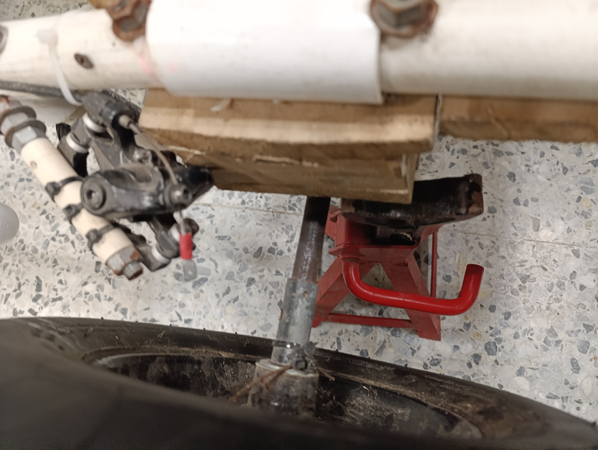
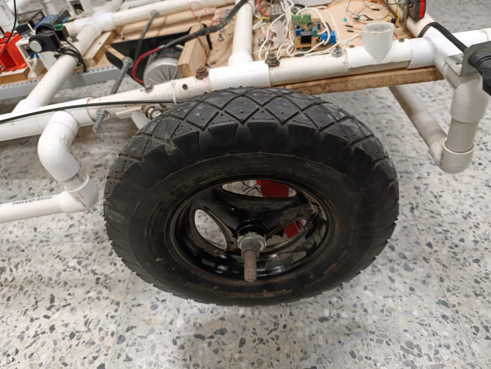
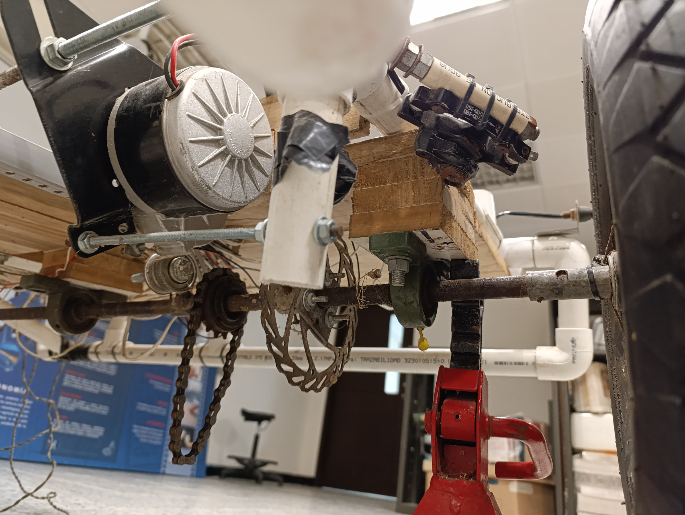

Descripción del Proyecto
Durante el desarrollo del vehículo EPICS Uninorte se identificó la falta de un sistema de medición de revoluciones por minuto en las ruedas. Esta carencia dificultaba el control de velocidad y podía comprometer la seguridad estructural del vehículo. Por ello, se plantea como solución la implementación de un medidor de RPM que permita monitorear en tiempo real el giro de las ruedas, facilitando su supervisión y aportando a la mejora del desempeño del vehículo en escenarios demostrativos y educativos.
¡Nuestros Objetivos!
Objetivo general
Implementar un medidor de RPM para el vehículo EPICS Uninorte.
Objetivos específicos
- Evaluar distintos métodos para la medición y el cálculo de las revoluciones por minuto del vehículo EPICS.
- Implementar un método de visualización para las medidas de RPM obtenidas.
- Integrar el sistema en la estructura del vehículo.
- Validar la funcionalidad del sistema propuesto.
Detalles del Vehículo



El vehículo EPICS Uninorte se empezó a desarrollar a mediados del 2022 para mostrarlo en ferias escolares, con el objetivo de promocionar el programa de Ingeniería Electrónica y de implementar mejoras prácticas en la asignatura de Electrónica III.
Registro de gastos
| Detalles | Cantidad | Costo total |
|---|---|---|
| Impresión de circuito | 1 | $30.000 |
| NMOS 2N7000 | 7 | $14.000 |
| PMOS BS250 | 4 | $14.400 |
| NPN 2N2222 | 8 | $1.600 |
| PNP 2N3906 | 3 | $0 |
| Capacitor | 1 | $0 |